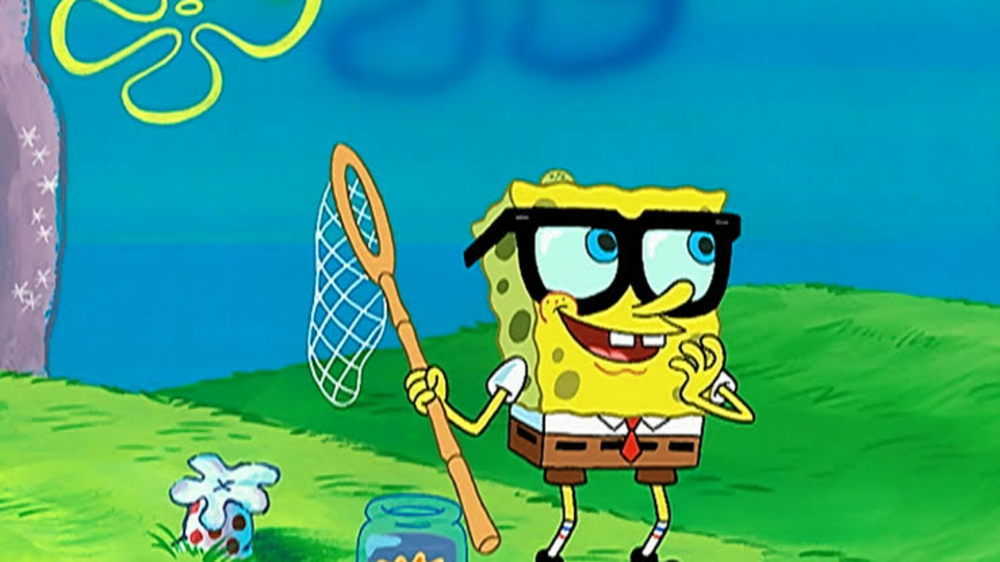

Alteração
Quem é Bob Esponja?
Bob Esponja Calça Quadrada é o protagonista da série de animação americana de mesmo nome, criada pelo biólogo marinho e animador Stephen Hillenburg. Ele é uma esponja do mar otimista e enérgica que vive em um abacaxi no fundo do mar, na cidade da Fenda do Biquíni.
Sua personalidade alegre e sua risada característica o tornaram um ícone da cultura pop, amado por crianças e adultos em todo o mundo.
Bob Esponja em Ação!

Aqui está o Bob Esponja, pronto para mais uma aventura na Fenda do Biquíni!
Amigos e Companhia
Bob Esponja não estaria completo sem seus amigos e vizinhos peculiares:
- Patrick Estrela: Seu melhor amigo, uma estrela-do-mar rosa e um tanto ingênua.
- Lula Molusco: Seu vizinho e colega de trabalho, um polvo mal-humorado que sonha com paz e tranquilidade.
- Sr. Siriguejo: Seu chefe avarento e dono do Siri Cascudo.
- Sandy Bochechas: Uma esquilo cientista do Texas que vive em um domo subaquático.
- Plankton: O arqui-inimigo do Sr. Siriguejo, sempre tentando roubar a fórmula secreta do hambúrguer de siri.
six seven
67
Curiosidades
- A série estreou em 1999 e rapidamente se tornou um sucesso mundial.
- Stephen Hillenburg, o criador, era um biólogo marinho e usou seu conhecimento para criar o universo da Fenda do Biquíni.
- Bob Esponja é conhecido por suas frases de efeito e momentos hilários.